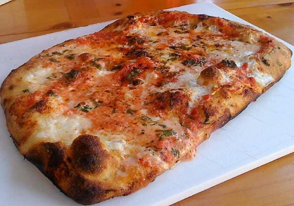

I'm not a fan of typical Southern cuisine (namely fried chicken and grits), but I must admit that I can't wait to try more pizza from the South.
1. Varasano’s Pizzeria
Atlanta, Georgia
Full disclosure: I was insanely hungry when we approached Varsano's but the smell coming out of the pizza ovens was incredible, and the taste of the pizza was even better. The pepperonis have a robust meaty flavor, and the dough have a perfect level of crispiness; the only downside is the slightly burnt crust.
Dough:
Crust: